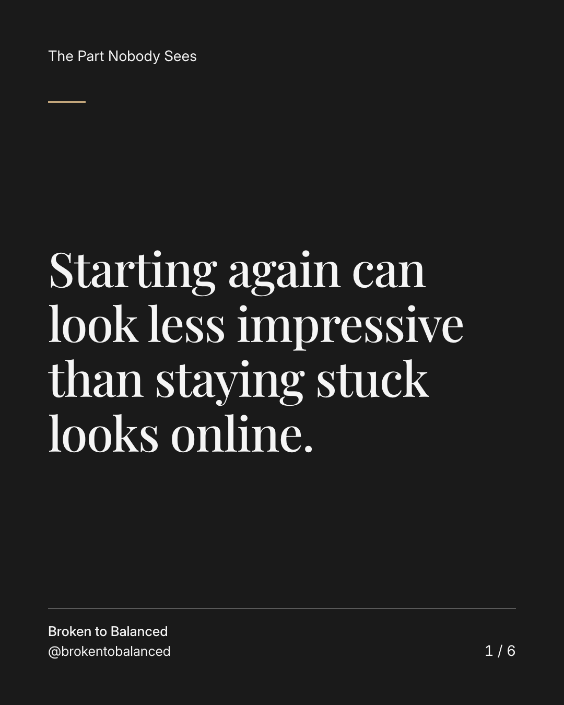
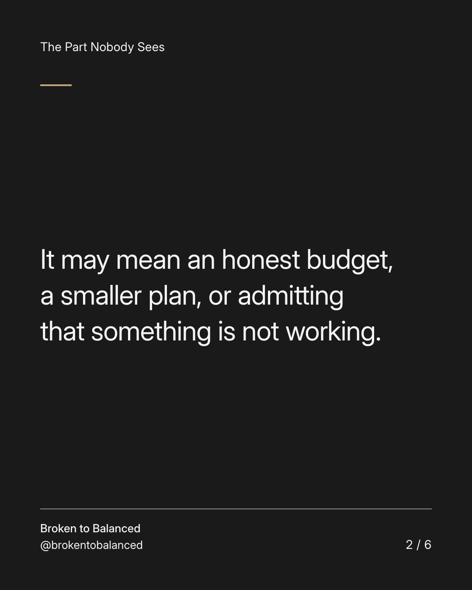
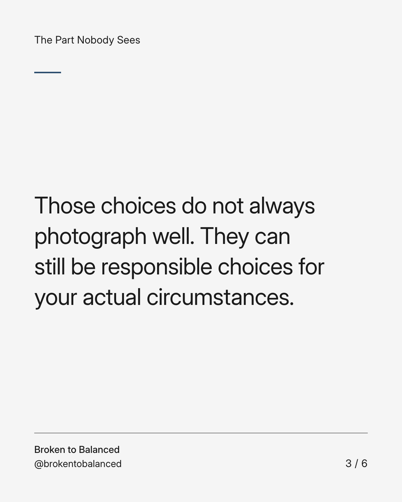
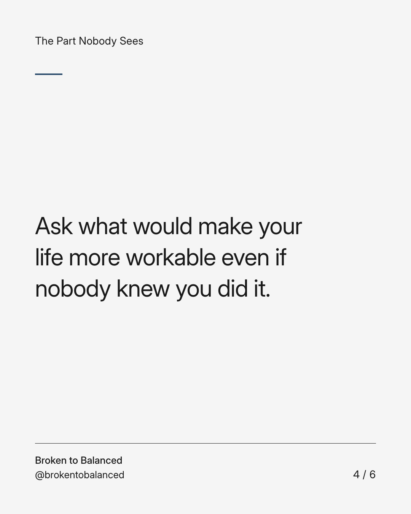
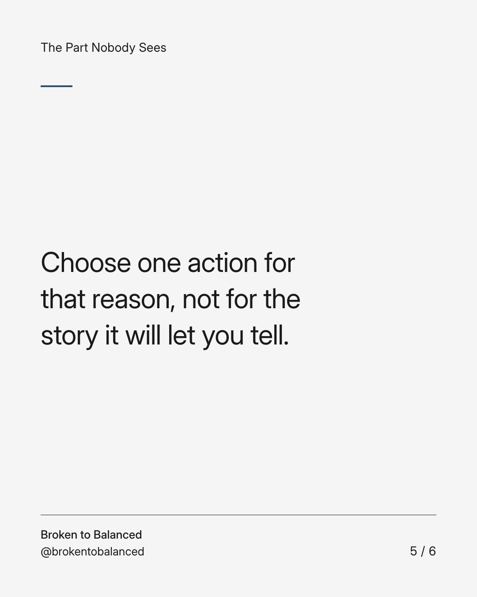
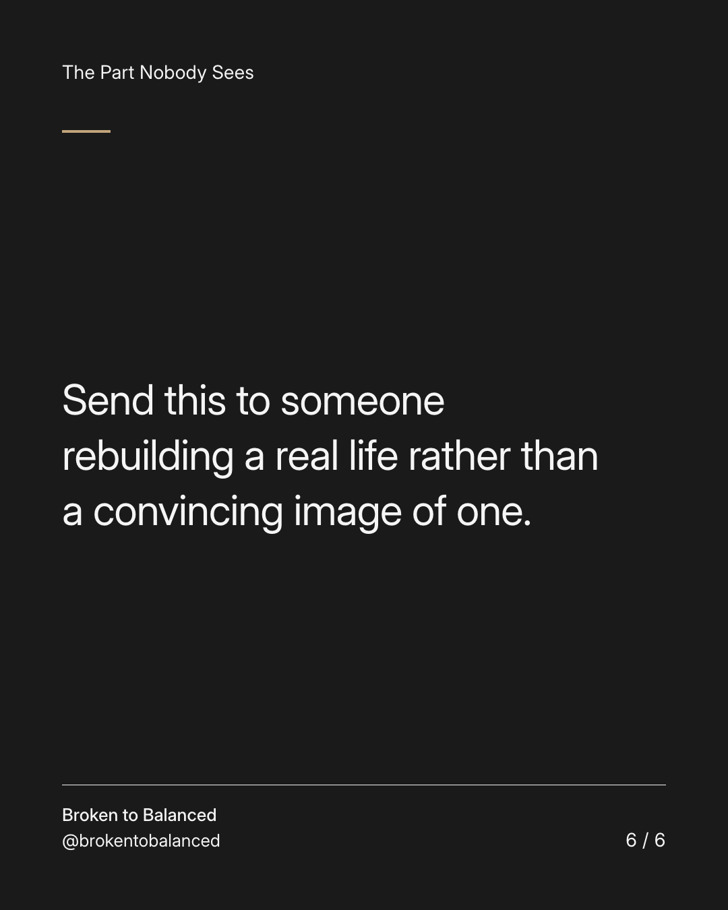

Exact text and accessibility text
Starting again can look less impressive than staying stuck looks online.
Slide 1 of 6. Starting again can look less impressive than staying stuck looks online.


Exact text and accessibility text
It may mean an honest budget, a smaller plan, or admitting that something is not working.
Slide 2 of 6. It may mean an honest budget, a smaller plan, or admitting that something is not working.


Exact text and accessibility text
Those choices do not always photograph well. They can still be responsible choices for your actual circumstances.
Slide 3 of 6. Those choices do not always photograph well. They can still be responsible choices for your actual circumstances.


Exact text and accessibility text
Ask what would make your life more workable even if nobody knew you did it.
Slide 4 of 6. Ask what would make your life more workable even if nobody knew you did it.


Exact text and accessibility text
Choose one action for that reason, not for the story it will let you tell.
Slide 5 of 6. Choose one action for that reason, not for the story it will let you tell.


Exact text and accessibility text
Send this to someone rebuilding a real life rather than a convincing image of one.
Slide 6 of 6. Send this to someone rebuilding a real life rather than a convincing image of one.
Exact caption
Plain-text fallback: select and copy the caption.